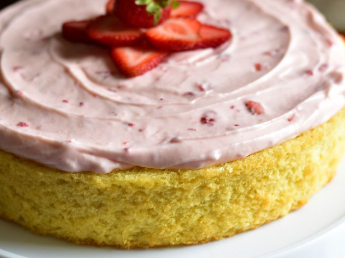

Easy Vanilla Cake

Description
This vanilla cake recipe is great for all occasions and easy to make.
It's the best cake I have ever made.
It's not too bland, and it's not too sweet.
Slice the cooled cake through the middle to make two layers and frost as desired.
Ingredients
- cooking spray
- 2 ⅔ cups all-purpose flour, or more as needed
- 1 cup white sugar
- 1 tablespoon baking powder
- 1 tablespoon vanilla extract
- 2 pinches salt
- 3 eggs
- ¾ cup milk
- ¾ cup vegetable oil
Steps
- Preheat the oven to 350 degrees F (175 degrees C). Grease a 9-inch cake tin with cooking spray and line with parchment paper.
- Mix flour, sugar, baking powder, vanilla extract, and salt together in a large bowl. Add eggs, milk, and vegetable oil; mix by hand or beat with an electric mixer on low speed until smooth. Add more flour if batter is too runny. Pour into the prepared pan.
- Bake in the preheated oven until a toothpick inserted into the center of the cake comes out clean, about 1 hour. Cool on a wire rack for 5 minutes. Run a table knife around the edges to loosen. Invert cake carefully onto a cooling rack. Let cool completely.